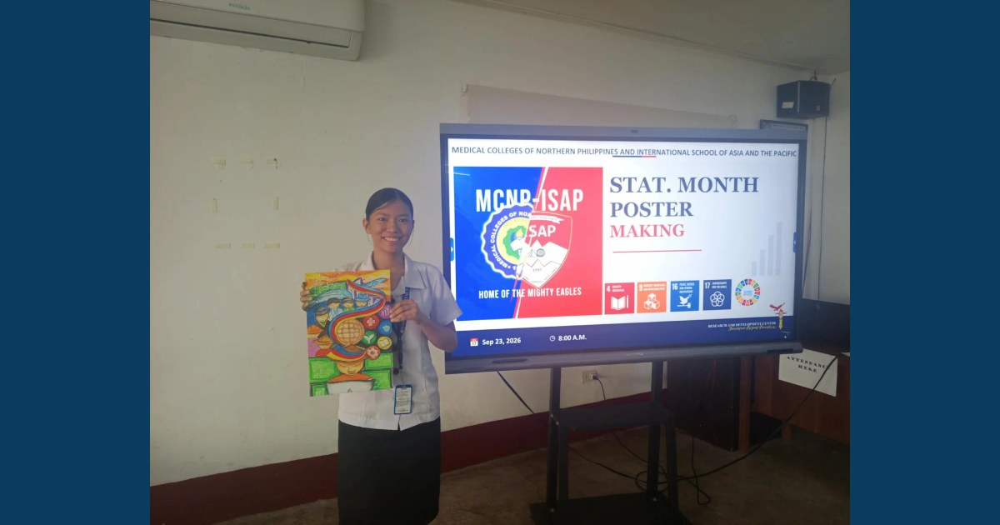

When Data Finds Its Voice Through Art

The Sep 24 showcase featured winning entries from the Sep 23 MCNP–ISAP Statistical Month Poster-Making Contest. Through color and creativity, students transformed statistical concepts into meaningful visual stories of education, health, technology, and development.
Read full article